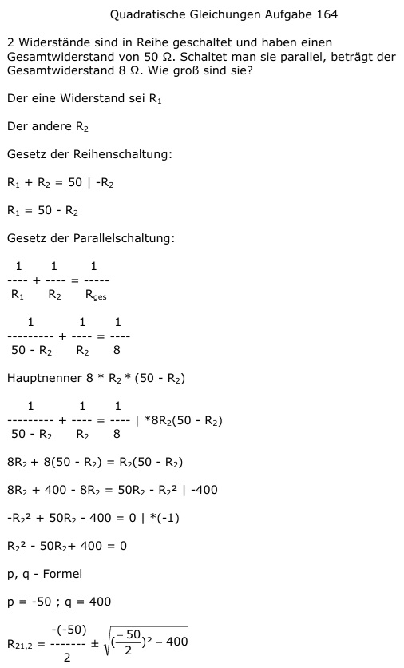

Aufgabe 164 2 Widerstände sind in Reihe geschaltet und haben einen Gesamtwiderstand von 50 Ω. Schaltet man sie parallel, beträgt der Gesamtwiderstand 8 Ω. Wie groß sind sie? Der eine Widerstand sei R1 Der andere R2 Gesetz der Reihenschaltung: R1 + R2 = 50 |-R2 R1 = 50 - R2 Gesetz der Parallelschaltung: 1 1 1 ---- + ---- = ----- R1 R2 Rges 1 1 1 --------- + ---- = --- 50 - R2 R2 8 Hauptnenner 8 * R2 * (50 - R2) 1 1 1 --------- + ---- = ---- |*8R2(50 - R2) 50 - R2 R2 8 8R2 + 8(50 - R2) = R2(50 - R2) 8R2 + 400 - 8R2 = 50R2 - R22 | -400 -R22 + 50R2 - 400 = 0 |*(-1) R22 - 50R2+ 400 = 0 p, q - Formel p = -50 ; q = 400  R21,2 = 25 ± 15 R21 = 25 + 15 = 40 Ω größerer R22 = 25 - 15 = 10 Ω kleinerer